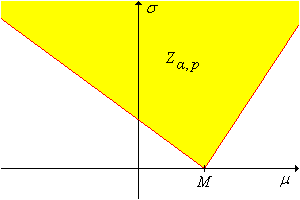
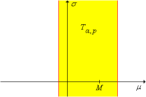
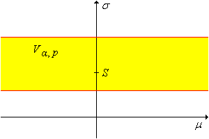

The normal distribution is perhaps the most important distribution in the study of mathematical statistics, in part because of the central limit theorem. As a consequence of this theorem, a measured quantity that is subject to numerous small, random errors will have, at least approximately, a normal distribution. Such variables are ubiquitous in statistical experiments, in subjects varying from the physical and biological sciences to the social sciences.
So in this section, we assume that \(\bs{X} = (X_1, X_2, \ldots, X_n)\) is a random sample from the normal distribution with mean \(\mu\) and standard deviation \(\sigma\). Our goal is to construct confidence intervals for \(\mu\) and \(\sigma\) individually, and then more generally, confidence sets for \( (\mu, \sigma) \). These are among of the most important special cases of set estimation. A parallel section on Tests in the Normal Model is in Chapter 8 on hypothesis testing. First we need to review some basic facts that will be critical for our analysis.
Recall that the sample mean \( M \) and sample variance \( S^2 \) are \[ M = \frac{1}{n} \sum_{i=1}^n X_i, \quad S^2 = \frac{1}{n - 1} \sum_{i=1}^n (X_i - M)^2\]
From our study of point estimation, recall that \( M \) is an unbiased and consistent estimator of \( \mu \) while \( S^2 \) is an unbiased and consistent estimator of \( \sigma^2 \). From these basic statistics we can construct the pivot variables that will be used to construct our interval estimates. Recall the following special properties of the normal distribution:
Define \[ Z = \frac{M - \mu}{\sigma \big/ \sqrt{n}}, \quad T = \frac{M - \mu}{S \big/ \sqrt{n}}, \quad V = \frac{n - 1}{\sigma^2} S^2 \]
It follows that each of these random variables is a pivot variable for \( (\mu, \sigma) \) since the distributions do not depend on the parameters, but the variables themselves functionally depend on one or both parameters. Pivot variables \( Z \) and \( T \) will be used to construct interval estimates of \( \mu \) while \( V \) will be used to construct interval estimates of \( \sigma^2 \). To construct our estimates, we will need quantiles of these standard distributions. The quantiles can be computed using the quantile app or from most mathematical and statistical software packages. Here is the notation we will use:
Let \( p \in (0, 1) \) and \( k \in \N_+ \).
Since the standard normal and student \( t \) distributions are symmetric about 0, it follows that \( z(1 - p) = -z(p) \) and \( t_k(1 - p) = -t_k(p) \) for \( p \in (0, 1) \) and \( k \in \N_+ \). On the other hand, the chi-square distribution is not symmetric.
For our first discussion, we assume that the distribution mean \( \mu \) is unknown but the standard deviation \( \sigma \) is known. This is not always an artificial assumption. There are often situations where \( \sigma \) is stable over time, and hence is at least approximately known, while \( \mu \) changes because of different treatments
. Examples are given in the computational exercises below. The pivot variable \( Z \) leads to confidence intervals for \( \mu \).
For \( \alpha \in (0, 1) \),
Since \( Z = \frac{M - \mu}{\sigma / \sqrt{n}} \) has the standard normal distribution, each of the following events has probability \( 1 - \alpha \) by definition of the quantiles:
In each case, solving the inequality for \( \mu \) gives the result.
These are the standard interval estimates for \( \mu \) when \( \sigma \) is known. The two-sided confidence interval in (a) is symmetric about the sample mean \( M \), and as the proof shows, corresponds to equal probability \( \frac{\alpha}{2} \) in each tail of the distribution of the pivot variable \( Z \). But of course, this is not the only two-sided \( 1 - \alpha \) confidence interval; we can divide the probability \( \alpha \) anyway we want between the left and right tails of the distribution of \( Z \).
For every \(\alpha, \, p \in (0, 1)\), a \(1 - \alpha\) confidence interval for \(\mu\) is \[ \left[M - z(1 - p \alpha) \frac{\sigma}{\sqrt{n}}, M - z(\alpha - p \alpha) \frac{\sigma}{\sqrt{n}} \right] \]
From the normal distribution of \( M \) and the definition of the quantile function, \[ \P \left[ z(\alpha - p \, \alpha) \lt \frac{M - \mu}{\sigma / \sqrt{n}} \lt z(1 - p \alpha) \right] = 1 - \alpha \] The result then follows by solving for \(\mu\) in the inequality.
In terms of the distribution of the pivot variable \( Z \), as the proof shows, the two-sided confidence interval above corresponds to \( p \alpha \) in the right tail and \( (1 - p) \alpha \) in the left tail. Next, let's study the length of this confidence interval.
For \( \alpha, \, p \in (0, 1) \), the (deterministic) length of the two-sided \( 1 - \alpha \) confidence interval above is \[L = \frac{\left[z(1 - p \alpha) - z(\alpha - p \alpha)\right] \sigma}{\sqrt{n}} \]
The last result shows again that there is a tradeoff between the confidence level and the length of the confidence interval. If \(n\) and \(p\) are fixed, we can decrease \(L\), and hence tighten our estimate, only at the expense of decreasing our confidence in the estimate. Conversely, we can increase our confidence in the estimate only at the expense of increasing the length of the interval. In terms of \(p\), the best of the two-sided \(1 - \alpha\) confidence intervals (and the one that is almost always used) is symmetric, equal-tail interval with \( p = \frac{1}{2} \):
Use the mean estimation experiment to explore the procedure. Select the normal distribution and select normal pivot. Use various parameter values, confidence levels, sample sizes, and interval types. For each configuration, run the experiment 1000 times. As the simulation runs, note that the confidence interval successfully captures the mean if and only if the value of the pivot variable is between the quantiles. Note the size and location of the confidence intervals and compare the proportion of successful intervals to the theoretical confidence level.
For the standard confidence intervals, let \(d\) denote the distance between the sample mean \(M\) and an endpoint. That is, \[ d = z_\alpha \frac{\sigma}{\sqrt{n}} \] where \(z_\alpha = z(1 - \alpha /2 )\) for the two-sided interval and \(z_\alpha = z(1 - \alpha)\) for the upper or lower confidence interval. The number \( d \) is the margin of error of the estimate.
Note that \(d\) is deterministic, and the length of the standard two-sided interval is \(L = 2 d\). In many cases, the first step in the design of the experiment is to determine the sample size needed to estimate \(\mu\) with a given margin of error and a given confidence level.
The sample size needed to estimate \(\mu\) with confidence \(1 - \alpha\) and margin of error \(d\) is \[ n = \left \lceil \frac{z_\alpha^2 \sigma^2}{d^2} \right\rceil \]
This follows by solving for \( n \) in the definition of \( d \) above, and then rounding up to the next integer.
Note that \(n\) varies directly with \(z_\alpha^2\) and with \(\sigma^2\) and inversely with \(d^2\). This last fact implies a law of diminishing return in reducing the margin of error. For example, if we want to reduce a given margin of error by a factor of \(\frac{1}{2}\), we must increase the sample size by a factor of 4.
For our next discussion, we assume that the distribution mean \( \mu \) and standard deviation \( \sigma \) are unknown, the usual situation. In this case, we can use the \( T \) pivot variable, rather than the \( Z \) pivot variable, to construct confidence intervals for \( \mu \).
For \( \alpha \in (0, 1) \),
Since \( T = \frac{M - \mu}{S / \sqrt{n}} \) has the \( t \) distribution with \( n - 1 \) degees of freedom, each of the following events has probability \( 1 - \alpha \), by definition of the quantiles:
In each case, solving for \( \mu \) in the inequality gives the result.
These are the standard interval estimates of \( \mu \) with \( \sigma \) unknown. The two-sided confidence interval in (a) is symmetric about the sample mean \( M \) and corresponds to equal probability \( \frac{\alpha}{2} \) in each tail of the distribution of the pivot variable \( T \). As before, this is not the only confidence interval; we can divide \( \alpha \) between the left and right tails any way that we want.
For every \(\alpha, \, p \in (0, 1)\), a \(1 - \alpha\) confidence interval for \(\mu\) is \[ \left[M - t_{n-1}(1 - p \alpha) \frac{S}{\sqrt{n}}, M - t_{n-1}(\alpha - p \alpha) \frac{S}{\sqrt{n}} \right] \]
Since \( T \) has the student \( t \) distribution with \( n - 1 \) degrees of freedom, it follows from the definition of the quantiles that \[ \P \left[ t_{n-1}(\alpha - p \alpha) \lt \frac{M - \mu}{S \big/ \sqrt{n}} \lt t_{n-1}(1 - p \alpha) \right] = 1 - \alpha \] The result then follows by solving for \(\mu\) in the inequality.
The two-sided confidence interval above corresponds to \( p \alpha \) in the right tail and \( (1 - p) \alpha \) in the left tail of the distribution of the pivot variable \( T \). Next, let's study the length of this confidence interal.
For \( \alpha, \, p \in (0, 1) \), the (random) length of the two-sided \( 1 - \alpha \) confidence interval above is \[ L = \frac{t_{n-1}(1 - p \alpha) - t_{n-1}(\alpha - p \alpha)} {\sqrt{n}} S \]
Parts (a) and (b) follow from properties of the student quantile function \( t_{n-1} \). Parts (c) and (d) follow from the fact that \( \frac{\sqrt{n - 1}}{\sigma} S \) has a chi distribution with \( n - 1 \) degrees of freedom.
Once again, there is a tradeoff between the confidence level and the length of the confidence interval. If \(n\) and \(p\) are fixed, we can decrease \(L\), and hence tighten our estimate, only at the expense of decreasing our confidence in the estimate. Conversely, we can increase our confidence in the estimate only at the expense of increasing the length of the interval. In terms of \(p\), the best of the two-sided \(1 - \alpha\) confidence intervals (and the one that is almost always used) is symmetric, equal-tail interval with \( p = \frac{1}{2} \). Finally, note that it does not really make sense to consider \( L \) as a function of \( S \), since \( S \) is a statistic rather than an algebraic variable. Similarly, it does not make sense to consider \( L \) as a function of \( n \), since changing \( n \) means new data and hence a new value of \( S \).
Use the mean estimation experiment to explore the procedure. Select the normal distribution and the \( T \) pivot. Use various parameter values, confidence levels, sample sizes, and interval types. For each configuration, run the experiment 1000 times. As the simulation runs, note that the confidence interval successfully captures the mean if and only if the value of the pivot variable is between the quantiles. Note the size and location of the confidence intervals and compare the proportion of successful intervals to the theoretical confidence level.
Next we will construct confidence intervals for \( \sigma^2 \) using the pivot variable \( V \) given in
For \( \alpha \in (0, 1) \),
Since \( V = \frac{n - 1}{\sigma^2} S^2 \) has the chi-square distribution with \( n - 1 \) degrees of freedom, each of the following events has probability \( 1 - \alpha \) by definition of the quantiles:
In each case, solving for \( \sigma^2 \) in the inequality give the result.
These are the standard interval estimates for \( \sigma^2 \). The two-sided interval in (a) is the equal-tail interval, corresponding to probability \( \alpha / 2 \) in each tail of the distribution of the pivot variable \( V \). Note however that this interval is not symmetric about the sample variance \( S^2 \). Once again, we can partition the probability \( \alpha \) between the left and right tails of the distribution of \( V \) any way that we like.
For every \( \alpha, \, p \in (0, 1) \), a \( 1 - \alpha \) confidence interval for \( \sigma^2 \) is \[ \left[\frac{n - 1}{\chi^2_{n-1}(1 - p \alpha)} S^2, \frac{n - 1}{\chi^2_{n-1}(\alpha - p \alpha)} S^2\right]\]
In terms of the distribution of the pivot variable \( V \), the confidence interval above corresponds to \( p \alpha \) in the right tail and \( (1 - p) \alpha \) in the left tail. Once again, let's look at the length of the general two-sided confidence interval. The length is random, but is a multiple of the sample variance \( S^2 \). Hence we can compute the expected value and variance of the length.
For \( \alpha, \, p \in (0, 1) \), the (random) length of the two-sided confidence interval in the last theorem is \[ L = \left[\frac{1}{\chi^2_{n-1}(\alpha - p \alpha)} - \frac{1}{\chi^2_{n-1}(1 - p \alpha)}\right] (n - 1) S^2 \]
To construct an optimal two-sided confidence interval, it would be natural to find \( p \) that minimizes the expected length. This is a complicated problem, but it turns out that for large \( n \), the equal-tail interval with \( p = \frac{1}{2} \) is close to optimal. Of course, taking square roots of the endpoints of any of the confidence intervals for \( \sigma^2 \) gives \( 1 - \alpha \) confidence intervals for the distribution standard deviation \( \sigma \).
Use variance estimation experiment to explore the procedure. Select the normal distribution. Use various parameter values, confidence levels, sample sizes, and interval types. For each configuration, run the experiment 1000 time. As the simulation runs, note that the confidence interval successfully captures the standard deviation if and only if the value of the pivot variable is between the quantiles. Note the size and location of the confidence intervals and compare the proportion of successful intervals to the theoretical confidence level.
In the discussion above, we constructed confidence intervals for \( \mu \) and for \( \sigma \) separately (again, usually both parameters are unknown). In our next discussion, we will consider confidence sets for the parameter point \( (\mu, \sigma) \). These sets will be subsets of the underlying parameter space \( \R \times (0, \infty) \).
Each of the pivot variables \( Z \), \( T \), and \( V \) can be used to construct confidence sets for \( (\mu, \sigma) \). In isolation, each will produce an unbounded confidence set, not surprising since, we are using a single pivot variable to estimate two parameters. We consider the normal pivot variable \( Z \) first.
For any \(\alpha, \, p \in (0, 1)\), a \(1 - \alpha\) level confidence set for \((\mu, \sigma)\) is
\[ Z_{\alpha,p} = \left\{ (\mu, \sigma): M - z(1 - p \alpha) \frac{\sigma}{\sqrt{n}} \lt \mu \lt M - z(\alpha - p \alpha) \frac{\sigma}{\sqrt{n}} \right\} \]
The confidence set is a From the normal distribution of \( M \) and the definition of the quantile function,
\[ \P \left[ z(\alpha - p \, \alpha) \lt \frac{M - \mu}{\sigma / \sqrt{n}} \lt z(1 - p \alpha) \right] = 1 - \alpha \]
The result then follows by solving for \(\mu\) in the inequality.cone
in the \((\mu, \sigma)\) parameter space, with vertex at \((M, 0)\) and boundary lines of slopes \(-\sqrt{n} \big/ z(1 - p \alpha)\) and \(-\sqrt{n} \big/ z(\alpha - p \alpha)\)
Details:
The confidence cone is shown in the graph below. (Note, however, that both slopes might be negative or both positive.)

The pivot variable \(T\) leads to the following result:
For every \(\alpha, \, p \in (0, 1)\), a \(1 - \alpha\) level confidence set for \((\mu, \sigma)\) is \[ T_{\alpha, p} = \left\{ (\mu, \sigma): M - t_{n-1}(1 - p \alpha) \frac{S}{\sqrt{n}} \lt \mu \lt M - t_{n-1}(\alpha - p \alpha) \frac{S}{\sqrt{n}} \right\}\]
From the student distribution of \( T \) and the definition of the quanitle function, \[ \P \left[ t_{n-1}(\alpha - p \alpha) \lt \frac{M - \mu}{S \big/ \sqrt{n}} \lt t_{n-1}(1 - p \alpha) \right] = 1 - \alpha \] The result now follows from solving for \(\mu\) in the inequality.

By design, this confidence set gives no information about \(\sigma\). Finally, the pivot variable \(V\) leads to the following result:
For every \(\alpha, \, p \in (0, 1)\), a \(1 - \alpha\) level confidence set for \((\mu, \sigma)\) is \[ V_{\alpha, p} = \left\{ (\mu, \sigma): \frac{(n - 1)S^2}{\chi_{n-1}^2(1 - p \alpha)} \lt \sigma^2 \lt \frac{(n - 1)S^2}{\chi_{n-1}^2(\alpha - p \alpha)} \right\} \]
From the chi-square distribution of \( V \) and the definition of the quantile function, \[ \P \left[\chi_{n-1}^2(\alpha - p \, \alpha) \lt \frac{n^2}{\sigma^2} V^2 \lt \chi_{n-1}^2(1 - p \alpha) \right] = 1 - \alpha \] The result then follows by solving for \(\sigma^2\) in the inequalilty.

By design, this confidence set gives no information about \(\mu\).
We can now form intersections of some of the confidence sets constructed above to obtain bounded confidence sets for \((\mu, \sigma)\). We will use the fact that the sample mean \(M\) and the sample variance \(S^2\) are independent, one of the most important special properties of a normal sample. We will also need the result from the introduction on the intersection of confidence interals. In the following theorems, suppose that \(\alpha, \, \beta, \, p, \, q \in (0, 1)\) with \(\alpha + \beta \lt 1\).
The set \(T_{\alpha, p} \cap V_{\beta, q}\) is a conservative \(1 - (\alpha + \beta)\) confidence sets for \((\mu, \sigma)\).
The set \(Z_{\alpha, p} \cap V_{\beta, q}\) is a \((1 - \alpha)(1 - \beta)\) confidence set for \((\mu, \sigma)\).

It is interesting to note that the confidence set \(T_{\alpha, p} \cap V_{\beta, q}\) is a product set as a subset of the parameter space, but is not a product set as a subset of the sample space. By contrast, the confidence set \(Z_{\alpha, p} \cap V_{\beta, q}\) is not a product set as a subset of the parameter space, but is a product set as a subset of the sample space.
The main assumption that we made was that the underlying sampling distribution is normal. Of course, in real statistical problems, we are unlikely to know much about the sampling distribution, let alone whether or not it is normal. When a statistical procedure works reasonably well, even when the underlying assumptions are violated, the procedure is said to be robust. In this subsection, we will explore the robustness of the estimation procedures for \(\mu\) and \(\sigma\).
Suppose in fact that the underlying distribution is not normal. When the sample size \(n\) is relatively large, the distribution of the sample mean will still be approximately normal by the central limit theorem. Thus, our interval estimates of \(\mu\) may still be approximately valid.
Use the simulation of the mean estimation experiment to explore the procedure. Select the gamma distribution and select student pivot. Use various parameter values, confidence levels, sample sizes, and interval types. For each configuration, run the experiment 1000 times. Note the size and location of the confidence intervals and compare the proportion of successful intervals to the theoretical confidence level.
In the mean estimation experiment, repeat the previous exercise with the uniform distribution.
How large \(n\) needs to be for the interval estimation procedures of \(\mu\) to work well depends, of course, on the underlying distribution; the more this distribution deviates from normality, the larger \(n\) must be. Fortunately, convergence to normality in the central limit theorem is rapid and hence, as you observed in the exercises, we can get away with relatively small sample sizes (30 or more) in most cases.
In general, the interval estimation procedures for \(\sigma\) are not robust; there is no analog of the central limit theorem to save us from deviations from normality.
In variance estimation experiment, select the gamma distribution. Use various parameter values, confidence levels, sample sizes, and interval types. For each configuration, run the experiment 1000 times. Note the size and location of the confidence intervals and compare the proportion of successful intervals to the theoretical confidence level.
In variance estimation experiment, select the uniform distribution. Use various parameter values, confidence levels, sample sizes, and interval types. For each configuration, run the experiment 1000 times. Note the size and location of the confidence intervals and compare the proportion of successful intervals to the theoretical confidence level.
In the following exercises, use the equal-tailed construction for two-sided confidence intervals, unless otherwise instructed.
The length of a certain machined part is supposed to be 10 centimeters but due to imperfections in the manufacturing process, the actual length is a normally distributed with mean \(\mu\) and variance \(\sigma^2\). The variance is due to inherent factors in the process, which remain fairly stable over time. From historical data, it is known that \(\sigma = 0.3\). On the other hand, \(\mu\) may be set by adjusting various parameters in the process and hence may change to an unknown value fairly frequently. A sample of 100 parts has mean 10.2.
Suppose that the weight of a bag of potato chips (in grams) is a normally distributed random variable with mean \(\mu\) and standard deviation \(\sigma\), both unknown. A sample of 75 bags has mean 250 and standard deviation 10.
At a telemarketing firm, the length of a telephone solicitation (in seconds) is a normally distributed random variable with mean \(\mu\) and standard deviation \(\sigma\), both unknown. A sample of 50 calls has mean length 300 and standard deviation 60.
At a certain farm the weight of a peach (in ounces) at harvest time is a normally distributed random variable with standard deviation 0.5. How many peaches must be sampled to estimate the mean weight with a margin of error \(\pm 2\) and with 95% confidence.
25
The hourly salary for a certain type of construction work is a normally distributed random variable with standard deviation $1.25 and unknown mean \(\mu\). How many workers must be sampled to construct a 95% confidence lower bound for \(\mu\) with margin of error $0.25?
68
In Michelson's data, assume that the measured speed of light has a normal distribution with mean \(\mu\) and standard deviation \(\sigma\), both unknown.
truevalue of the speed of light in this interval?
In Cavendish's data, assume that the measured density of the earth has a normal distribution with mean \(\mu\) and standard deviation \(\sigma\), both unknown.
truevalue of the density of the earth in this interval?
In Short's data, assume that the measured parallax of the sun has a normal distribution with mean \(\mu\) and standard deviation \(\sigma\), both unknown.
truevalue of the parallax of the sun in this interval?
Suppose that the length of an iris petal of a given type (Setosa, Verginica, or Versicolor) is normally distributed. Use Fisher's iris data to construct 90% two-sided confidence intervals for each of the following parameters.